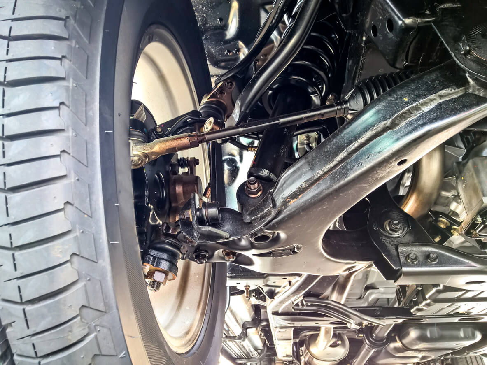

Диагностика двигателя:
- Полная компьютерная диагностика двигателя для выявления любых неисправностей.
- Анализ параметров работы двигателя с использованием современного оборудования.
- Устранение неисправностей, включая замену деталей и компонентов по необходимости.
Диагностика трансмиссии:
- Проверка состояния коробки передач и сцепления.
- Анализ работы системы автоматической, роботизированной и механической передачи.
- Ремонт либо замена деталей трансмиссии при необходимости.

Диагностика ходовой части:
- Проверка состояния подвески, амортизаторов, частей рулевого управления и тормозной системы.
- Выявление изношенных либо поврежденных деталей.
- Регулировка и замена деталей для восстановления оптимальной работы ходовой части.

Развал-схождение и балансировка колес:
- Точная настройка развал-схождения для безопасной езды и предотвращения износа шин.
- Инновационные 3D стенды регулировки развал-схождения
- Использование современного оборудования для более точной балансировки колес.
Замена масла и фильтров:
- Быстрая и качественная замена масла.
- Использование только высококачественных моторных масел и оригинальных фильтров.
- Откачка масла через щуп.
Беспокрасочное удаление вмятин:
- Устранение вмятин без необходимости покраски.
- Применение специализированных инструментов и методов.
- Сохранение заводского лакокрасочного покрытия и внешнего вида автомобиля.